1972: She was born in a 4-sibling family.
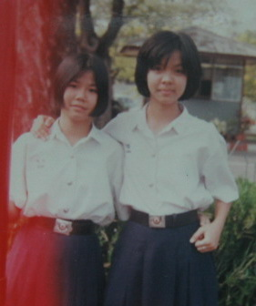
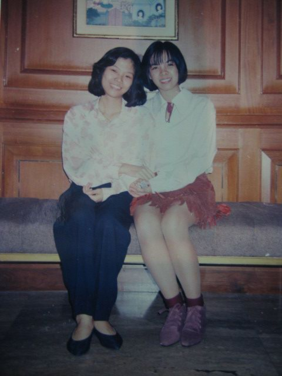
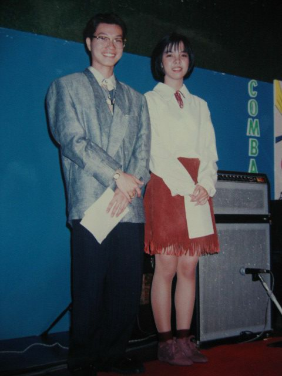
1975: He was born as the last child of another 4 siblings.
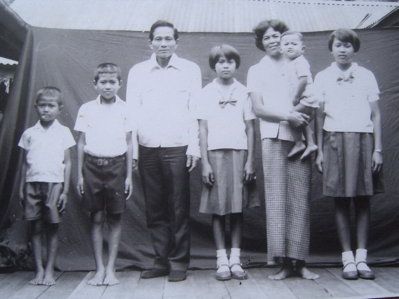
1998: We began to know each other when we were in
the Master Course, MSIT(1), Kasetsart University
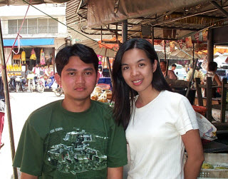
2000: The love was about growing beautifully but...
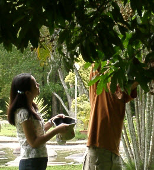
2004: We had to be so far away for almost 7 years when
he had to complete his Doctoral Degree in UK.
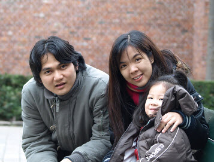
2010: The wedding plan was begun when the study had fisnished.
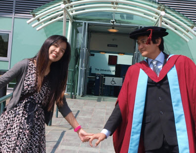
2011: Get ordained as a Buddhist Monk for a month at Wat Chonpratan Rungsarit and Soun Mokkh.
2011, 13th May: Ti's parents came over for making an official marriage proposal to Chu's dad.
The first wedding plan was set up during August.
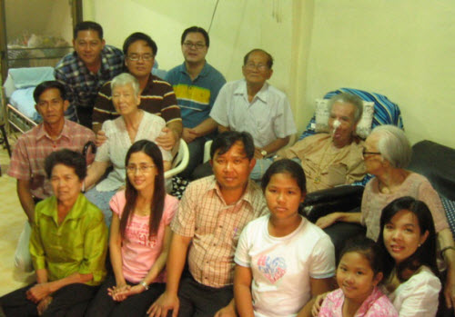
2011, July: It was another great loss for Chu when her beloved father had passed away.
The wedding ceremony was then cancelled and
it was later agreed to rearraenge again on 28th October.
2011 October: Never happened before, Bangkok was under the water for months.
The wedding had to cancelled again for the second time
and it had been postponed to 7th Jan 2012.
ขอบคุณครับ/ค่ะ
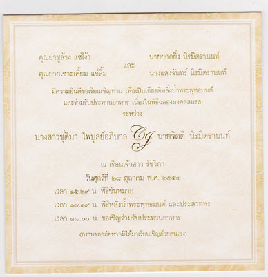
There is a matter of some concern ragarding the financial difficulties
we have been facing after the flooding crisis.
Although we have a printed-out invitation wedding card,
we decided not to dedicate them all to the people we know.
However, we have met most of the people we familiar with in person
to invite them to be honoured guests in our wedding.
Again, we surely have missed to invite some of you in person.
If you have heard our wedding news and if you are pleased
to join us as honoured guests, please do not hesitate to present
yourself in our wedding. You are MOST welcome!
ส่วนผู้มีเกียรติที่มาร่วมงานเลี้ยงตอนเย็น จะเป็นชุดไทย ๆ
เพื่อเข้ากับแขกผู้ร่วมงานในช่วงพิธีไทยท่านอื่น ๆ
หรือจะเป็นชุด สบาย ๆ (Smart Casual) ก็ได้เช่นครับ
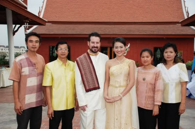
(รูป: เพื่อนบ้านติดกันก็แต่งที่นี่ /
Our neighbour had also set up their wedding here )
Thai traditional wedding ceremony will begin from 3:30pm on.
Therefore, to cool your body temperature down, Thai style
or thin breathable fabric dressing up would be reccommended.
However, for the evening buffet dinner,
you may opt to dress yourself up along with other guests
in Thai style but it is not limited to smart casual, or suit yourself!
เบื้องหลังการผลิต
เจ้าสาวออกแบบบน iPad 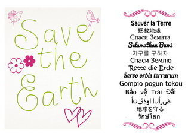 คำว่า "รักษ์โลก"หลาย ๆ ภาษา จากเพื่อน ๆ ทั่วโลก
Note: A special thank to all of our internaltional friends who have contributed your words.
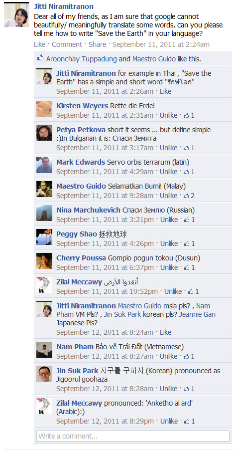